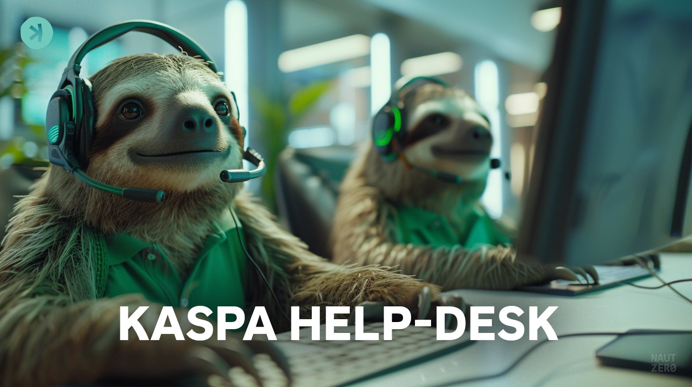

Anybody. Any level. Kaspa, crypto, money, proof of work. A feed-trained desk, not grok.com. No price. Never a seed.
Not grok.com. Feed-trained on Kaspa sources. Jokes: 100bps.wtf. Independent desk. Never a seed. Why / sources / conclusion
A public help desk for Kaspa and the surrounding stack: proof of work, money, decentralization. Beginner through protocol. The model is SpaceXAI. The feed is this desk’s pins — not a fine-tune of grok.com, and not Kaspa core speaking.
It will decline price predictions. It will refuse seeds. It will push back on moonboy welding. Thumbs-up answers can be folded back into the feed so the desk gets sharper without getting dumber.